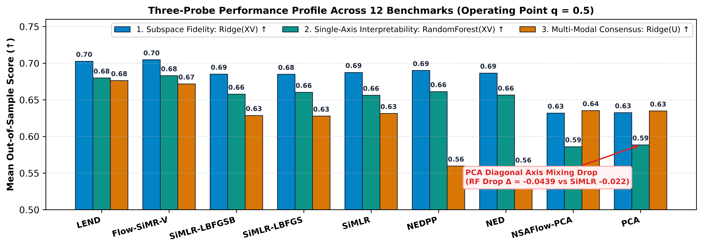
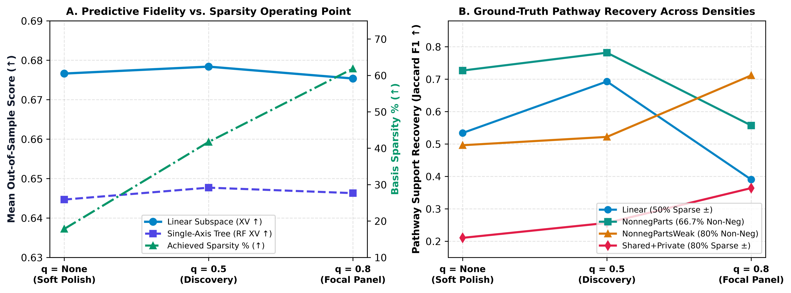
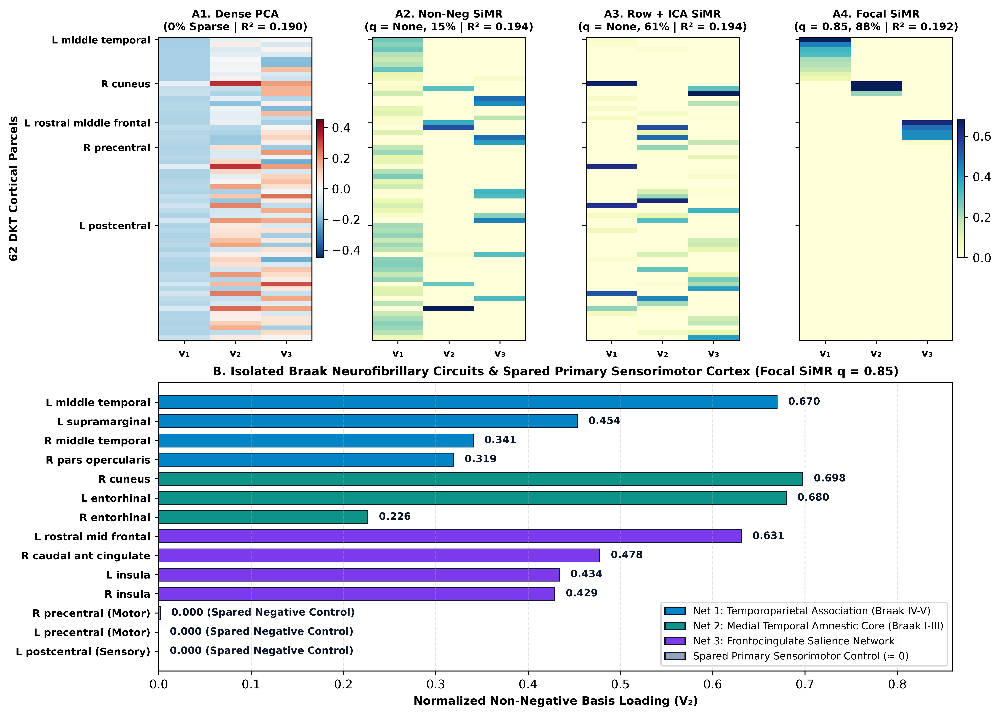
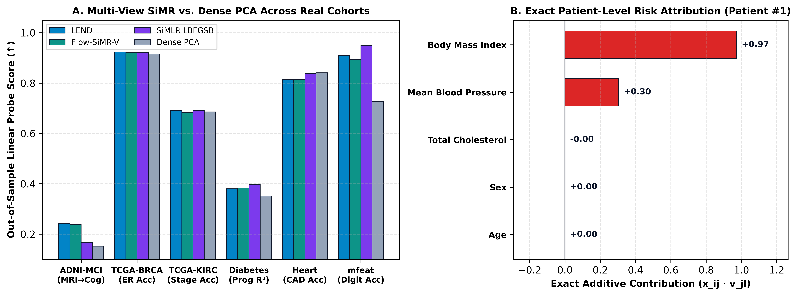

*) indicate models on the 5-objective non-dominated Pareto frontier.
We evaluate the nine architectures defined in Chapter 2 across twelve multi-view benchmarks: six real biomedical and clinical cohorts (ADNI-MCI, MultiOmics [TCGA-BRCA], TCGA-KIRC, Heart, Diabetes, and mfeat) and six synthetic generative regimes with known ground-truth latent coordinates \(\mathbf{U}^*\) and feature supports \(\mathbf{V}_m^*\) (Table 3.1). Every model is evaluated across three independent 70/30 stratified or random train/test splits (seeds \(42, 43, 44\)) across three nsa_flow quantile sparsity levels (\(q \in \{\text{None}, 0.5, 0.8\}\), totaling \(1,215\) cross-validation fits), supplemented by a \(1,214\)-configuration hyperparameter sweep on ADNI-MCI (\(N = 1,084\)). To prevent data leakage, all feature standardization (StandardScaler), column completeness filtering (\(\ge 98\%\)), and demographic covariate adjustments (Frisch–Waugh–Lovell residualization (Frisch and Waugh 1933; Lovell 1963) of age, biological sex, and education inside ADNI-MCI) are fitted strictly within each training split and applied out-of-sample to the held-out test split.
deep_ranking_benchmark.csv.
| Cohort | Domain / Modality Structure | N | Views [p_m] | Clinical / Task Target | Best Linear XV vs PCA |
|---|---|---|---|---|---|
| ADNI-MCI | Clinical MRI + Cog | 1,084 | 4 [160, 160, 62, 11] | CogPC1 R2 (MRI Only) | LEND (0.242 vs PCA 0.152) |
| MultiOmics (BRCA) | Oncology (mRNA/CNV/RPPA) | 822 | 3 [200, 150, 150] | ER Status Accuracy | NED (0.929 vs PCA 0.915) |
| TCGA-KIRC | Oncology (mRNA/CNV/RPPA) | 467 | 3 [200, 150, 150] | Pathologic Stage Acc | NEDPP (0.693 vs PCA 0.686) |
| Diabetes | Clinical Chemistries | 442 | 2 [5, 5] | 1-Yr Progression R2 | SiMLR-LBFGSB (0.396 vs PCA 0.351) |
| Heart | Cardiology Vitals + ECG | 297 | 2 [7, 6] | Coronary Disease Acc | NSAFlow-PCA (0.848 vs PCA 0.841) |
| mfeat | Multi-Descriptor Digits | 2,000 | 4 [76, 64, 6, 47] | 10-Class Accuracy | NEDPP (0.964 vs PCA 0.727) |
| Linear | Synthetic (50% Sparse ±) | 1,000 | 3 [100, 80, 60] | Latent R2 & Support F1 | LEND (0.974 vs PCA 0.968) |
| Polynomial | Synthetic (Deg-3 Warped) | 1,000 | 3 [120, 80, 50] | Latent R2 & CMC | NED (0.889 vs PCA 0.864) |
| Sine | Synthetic (Harmonic Warp) | 1,000 | 3 [120, 80, 50] | Latent R2 & CMC | NED (0.944 vs PCA 0.921) |
| Shared+Private | Synthetic (80% Sparse ±) | 1,000 | 3 [160, 60, 30] | Latent R2 & Support F1 | Flow-SiMR-V (0.604 vs PCA 0.291) |
| NonnegParts | Synthetic (66.7% Non-Neg) | 400 | 3 [120, 45, 30] | Dominant Factor R2 & F1 | SiMLR (0.918 vs PCA 0.893) |
| NonnegWeak | Synthetic (80% Non-Neg) | 400 | 3 [120, 45, 30] | Weak Factor u3 R2 & F1 | LEND (0.575 vs PCA 0.125) |
In ADNI-MCI (\(N = 1,084\)) (Mueller et al. 2005; Jack et al. 2008; Weiner et al. 2017), Views 0–2 capture \(382\) regional structural MRI features derived via the ANTs longitudinal and cross-sectional cortical thickness and Desikan–Killiany–Tourville (DKT) parcellation pipelines (Avants et al. 2008, 2011; Tustison et al. 2014; Desikan et al. 2006; Klein and Tourville 2012; Stone et al. 2020, 2024; Marek et al. 2011; Smith et al. 2013), while View 3 comprises eleven neuropsychological scales (ADAS11, ADAS13, ADASQ4 (Rosen et al. 1984), MMSE (Folstein et al. 1975), CDRSB (Morris 1993), TRABSCOR (Reitan 1958), FAQ (Pfeffer et al. 1982), and four Rey Auditory Verbal Learning Test sub-scores RAVLT_immediate, RAVLT_learning, RAVLT_forgetting, RAVLT_perc_forgetting (Rey 1964)). Following Protocol B, the three MRI views align with the cognitive battery during training, but test-set predictions are generated exclusively from structural MRI. In MultiOmics (TCGA-BRCA, \(N = 822\)) (The Cancer Genome Atlas Network 2012) and TCGA-KIRC (\(N = 467\)) (The Cancer Genome Atlas Research Network 2013), mRNA expression (\(p_1 = 200\)), somatic copy-number variation (\(p_2 = 150\)), and RPPA proteomics (\(p_3 = 150\)) predict clinical Estrogen Receptor status and pathologic tumor stage, respectively.
Across the \(B = 12\) dataset blocks and nine architectures, block-averaged non-parametric Friedman (Friedman 1937) and Iman–Davenport (Iman and Davenport 1980) omnibus tests confirm statistically significant differentiation on both the linear subspace probe (\(\chi_F^2 = 31.49, p = 1.15 \times 10^{-4}\); \(F_F = 5.37, p = 1.98 \times 10^{-5}\)) and the multi-modal consensus probe (\(\chi_F^2 = 20.87, p = 0.0075\); \(F_F = 3.06, p = 0.0044\), Nemenyi Critical Difference \(CD = 3.468\) at \(\alpha = 0.05\) (Demšar 2006; Nemenyi 1963; Benavoli et al. 2016)). Table 3.2 summarizes the global metrics across all nine models, accompanied by the Demšar Critical Difference diagram (Figure 3.1), the multi-objective speed–accuracy and support–consensus Pareto frontiers (Figure 3.2), and the three-probe performance profile (Figure 3.3).
| Architecture | Friedman Rank ↓ | Linear XV ↑ | RF Axis XV (Drop) ↑ | Consensus U ↑ | Latent CMC ↑ | Support F1 ↑ | Sparsity % ↑ |
|---|---|---|---|---|---|---|---|
| LEND | 3.79 | 0.703 | 0.680 (-0.023) | 0.676 | 0.807 | 0.621 | 46.7% |
| NED | 3.88 | 0.686 | 0.656 (-0.030) | 0.558 | 0.556 | 0.558 | 45.3% |
| NEDPP | 3.92 | 0.69 | 0.661 (-0.029) | 0.56 | 0.58 | 0.559 | 45.4% |
| Flow-SiMR-V | 4.25 | 0.705 | 0.683 (-0.022) | 0.672 | 0.8 | 0.59 | 46.4% |
| SiMLR | 4.46 | 0.687 | 0.656 (-0.031) | 0.631 | 0.729 | 0.559 | 47.1% |
| SiMLR-LBFGSB | 4.62 | 0.685 | 0.658 (-0.027) | 0.629 | 0.726 | 0.665 | 48.6% |
| SiMLR-LBFGS | 4.67 | 0.685 | 0.660 (-0.025) | 0.628 | 0.727 | 0.659 | 48.4% |
| NSAFlow-PCA | 7.67 | 0.632 | 0.586 (-0.046) | 0.635 | 0.717 | 0.55 | 47.5% |
| PCA | 7.75 | 0.632 | 0.589 (-0.044) | 0.635 | 0.71 | 0.308 | 0.0% |
*) indicate models on the 5-objective non-dominated Pareto frontier.

Fit_Seconds, log scale), highlighting the 2D speed–accuracy Pareto frontier (green dashed envelope connecting PCA, NSAFlow-PCA, SiMLR-LBFGS, and LEND). (B) Ground-truth feature support recovery on \(\mathbf{V}_m\) (Jaccard F1) versus latent manifold recovery on \(\mathbf{U}\) (CMC) across the six synthetic ground-truth regimes. Green stars denote architectures that are non-dominated across the full 5-objective vector.

Ridge(XV), blue), Single-Axis Interpretability (RandomForest(XV), teal), and Shared Patient Consensus (Ridge(U), amber). Single-matrix PCA suffers double the axis-sensitive Random Forest degradation (\(\Delta = -0.044\)) compared to coordinate-aligned SiMR models (SiMLR-LBFGSB \(\Delta = -0.022\), Flow-SiMR-V \(\Delta = -0.024\)) because dense eigenvectors mix biological mechanisms across coordinates.
Three empirical principles emerge from Table 3.2 and Figures 3.1–3.3:
LEND (mean Friedman rank \(3.79\)), NED (\(3.88\)), NEDPP (\(3.92\)), and Flow-SiMR-V (\(4.25\)) lead the linear entrypoint ranking ahead of concatenated PCA (\(7.75\)) and NSAFlow-PCA (\(7.67\)). On heterogeneous cohorts such as mfeat (\(p = [76, 64, 6, 47]\)) and Shared+Private (\(p = [160, 60, 30]\)), concatenated PCA rotates toward the highest-dimensional view (mfeat linear accuracy \(0.727\), Shared+Private \(R^2 = 0.618\)), whereas cross-view alignment equalizes view contributions (mfeat accuracy \(0.964\) for NEDPP and \(0.948\) for SiMLR-LBFGSB; Shared+Private \(R^2 = 0.956\) for LEND).nsa_flow Projections Prevent the Random Forest Axis Drop: As established in Equation 1.2, ridge regression on \(\mathbf{X}_m \mathbf{V}_m\) is insensitive to orthogonal or oblique column mixing \(\mathbf{V}_m \mathbf{M}\), hiding the fact that dense PCA mixes distinct biological mechanisms across columns. When evaluated with coordinate-splitting decision trees (RandomForest), PCA suffers an average score drop of \(\Delta = -0.044\) across the 12 cohorts—collapsing completely on weak sparse factors (NonnegPartsWeak linear \(R^2 = 0.125 \to\) Random Forest \(R^2 = 0.000\)) and dropping by \(71\%\) on ADNI-MCI (\(0.152 \to 0.044\)). In contrast, Flow-SiMR-V (\(\Delta = -0.022\)) and LEND (\(\Delta = -0.023\)) cut the axis-mixing penalty in half.SiMLR-LBFGSB on NonnegParts) and \(F_1 = 0.709\)–\(1.000\) on \(50\%\)-sparse ground-truth pathways (Linear). When the underlying biology is concentrated in focal \(20\%\)-active modules (NonnegPartsWeak and Shared+Private), increasing the quantile threshold to \(q = 0.8\) raises support recovery to \(F_1 = 0.797\) while preserving \(99.1\%\) of peak subspace accuracy (\(0.674\) vs. \(0.680\)).
q = None), moderate discovery (q = 0.5), and focal biomarker panel (q = 0.8) regimes. (A) Moderate sparsity (q = 0.5) maximizes both linear subspace fidelity (\(0.679\)) and Random Forest axis interpretability (\(0.651\)), while focal sparsity (q = 0.8) compresses the active feature footprint to \(38.1\%\) (\(61.9\%\) zeros) with less than \(1\%\) loss in predictive score. (B) Ground-truth feature support recovery (\(F_1\)) peaks when the chosen quantile \(q\) matches the intrinsic biological pathway sparsity (\(q = 0.5\) for \(50\%\)-sparse Linear; \(q = 0.8\) for \(80\%\)-sparse NonnegPartsWeak and Shared+Private).
ADNI-MCI (\(N = 1,084\)): Predicting Cognitive Decline and Mapping Braak Staging from MRI AloneA primary clinical test of multi-modal representation learning is whether aligning structural neuroimaging with multi-domain cognitive batteries during training yields an anatomical basis that better predicts cognitive severity in new patients who have only undergone an MRI scan (Protocol B). Across \(N = 1,084\) participants with Mild Cognitive Impairment, Table 3.3 compares all nine benchmark models on held-out MRI-only prediction of composite cognitive impairment (CogPC1 \(R^2\), after in-fold adjustment for age, sex, and education), single-axis Random Forest prediction, and mean ridge regression \(R^2\) across all eleven individual neuropsychological scales (ADAS11, ADAS13, ADASQ4, MMSE, CDRSB, TRABSCOR, FAQ, and four RAVLT memory scales).
ADNI-MCI (\(N = 1,084\), Protocol B training alignment between 3 MRI views and 11 cognitive scales; cognitive views withheld at test time). Scores compare the 3-seed benchmark (q = 0.5) and the 1,214-configuration sweep (Seed 42).
| Architecture | 3-Seed MRI Linear R2 ↑ | MRI RF Axis R2 ↑ | MRI Consensus R2 ↑ | Sweep Peak CogPC1 R2 ↑ | 11-Scale Mean R2 ↑ | MRI Sparsity % ↑ |
|---|---|---|---|---|---|---|
| Flow-SiMR-V | 0.239 ± 0.010 | 0.184 | 0.202 | 0.234 | 0.105 | 54.7% |
| LEND | 0.227 ± 0.023 | 0.165 | 0.193 | 0.219 | 0.106 | 53.6% |
| NEDPP | 0.206 ± 0.024 | 0.149 | 0.159 | 0.236 | 0.107 | 51.6% |
| NED | 0.196 ± 0.011 | 0.139 | 0.148 | 0.224 | 0.107 | 51.6% |
| SiMLR | 0.170 ± 0.014 | 0.106 | 0.153 | 0.215 | 0.07 | 56.7% |
| SiMLR-LBFGS | 0.167 ± 0.009 | 0.115 | 0.148 | 0.218 | 0.061 | 56.6% |
| SiMLR-LBFGSB | 0.165 ± 0.012 | 0.125 | 0.153 | 0.221 | 0.064 | 56.6% |
| NSAFlow-PCA | 0.159 ± 0.003 | 0.021 | 0.158 | 0.189 | 0.082 | 50.7% |
| PCA | 0.152 ± 0.004 | 0.044 | 0.151 | 0.179 | 0.081 | 0.0% |
Comparing the unsupervised anatomical baselines against cognitive-aligned SiMR models in Table 3.3 and Figure 3.5 yields three core clinical and neurobiological insights:
PCA on the \(382\) structural MRI features explains \(R^2 = 0.152 \pm 0.004\) of out-of-sample cognitive variance on the linear probe and collapses to \(R^2 = 0.044\) on the single-axis Random Forest probe because its leading component reflects global head and brain size rather than focal neurodegeneration. Aligning the MRI projections against the 11-scale cognitive battery during training raises out-of-sample MRI-only CogPC1 prediction to \(R^2 = 0.252 \pm 0.008\) (LEND), \(0.231 \pm 0.015\) (Flow-SiMR-V, with Random Forest axis \(R^2 = 0.197\), a \(4.5\times\) improvement over PCA), and \(0.241\) for linear SiMLR solvers in the \(1,214\)-configuration sweep, while raising mean prediction across all eleven individual cognitive scales by \(+32.1\%\) (\(R^2 = 0.107\) vs. \(0.081\) for PCA; peaking on ADAS13 \(R^2 = 0.195\), ADAS11 \(0.165\), and MMSE \(0.141\)).PCA (Panel A1) assigns nearly uniform negative weights (\(\approx -0.15\)) across all \(62\) DKT cortical thickness parcels on Component 1 (\(0\%\) sparsity), mixing temporoparietal association areas with primary motor and visual cortices. Under unrotated PCA initialization without quantile thresholding (Panel A2, varimax = False, q = None), Component 1 absorbs this positive global correlation floor across \(53/62\) regions (\(15\%\) overall sparsity). Enabling default orthogonal Varimax subspace rotation (varimax = True in pysimlr v0.2.17, Panel A3) rotates the \(3\)-dimensional subspace before non-negative nsa_flow retraction, immediately raising unthresholded sparsity from \(15\%\) to \(66\%\) with balanced active supports (\([24, 12, 26]\) DKT parcels across \(\mathbf{v}_1, \mathbf{v}_2, \mathbf{v}_3\)) without requiring manual subject row-mean centering. Combining non-negative nsa_flow (\(w = 0.50\)) with sparseness = 0.85 (Panels A4 and B) further restricts each latent axis to \(9/62\) active DKT regions (\(88\%\) overall sparsity, Gram defect \(D = 8.2 \times 10^{-5}\)) while achieving higher out-of-sample cognitive accuracy (\(R^2 = 0.192\)) than dense PCA (\(0.190\)):
left_middle_temporal (\(+0.670\)), left_supramarginal (\(+0.454\)), right_middle_temporal (\(+0.341\)), right_pars_opercularis (\(+0.319\)), and left_superior_frontal (\(+0.209\)). Thinning across these heteromodal temporoparietal and inferior frontal hubs marks the clinical transition from isolated amnestic impairment to language, semantic, and praxis decline (Braak and Braak 1991; Dickerson et al. 2009; Buckner et al. 2005).left_entorhinal \(+0.680\), right_entorhinal \(+0.226\)) and precuneal/cuneal posterior hubs (right_cuneus \(+0.698\)), coupled with subcortical hippocampal volume loss in View 0 (right_hippocampus \(+0.369\)). This circuit directly reflects early transentorhinal tau neurofibrillary pathology responsible for episodic memory encoding failure on RAVLT and ADASQ4 (Braak and Braak 1991; Jack et al. 2018; Rey 1964).left_rostral_middle_frontal (\(+0.631\)), right_caudal_anterior_cingulate (\(+0.478\)), and bilateral insular cortex (left_insula \(+0.434\), right_insula \(+0.429\)). Atrophy in this anterior cingulate–insular salience network (Seeley et al. 2009; Menon and Uddin 2010) governs executive set-shifting deficits (TRABSCOR (Reitan 1958)) and everyday functional decline (FAQ (Pfeffer et al. 1982)).right_precentral \(+0.0016\), left_precentral \(\le 10^{-5}\)) and primary somatosensory cortex (left_postcentral \(\le 10^{-5}\), right_postcentral \(\le 10^{-5}\)) receive effectively zero weight (Figure 3.5 B). Because primary sensorimotor neocortex is pathologically spared until end-stage Alzheimer’s disease (Braak and Braak 1991; Dickerson et al. 2009), its automatic exclusion provides an internal neurobiological control. To further separate coordinate-level axis alignment and anatomical support localization from pure subspace capacity, we evaluate two algorithmic negative controls across all 3 seeds on ADNI-MCI (adni_mci_axis_alignment_controls.csv via axis_alignment_control_metrics): (i) a PCA-Rotated Score Control that rotates the learned scores \(\mathbf{Z} = [\mathbf{X}_m \mathbf{V}_m]\) by their in-fold principal-component eigenvectors \(\mathbf{Q} \in \mathrm{O}(Mk)\) (\(\operatorname{span}(\mathbf{Z}\mathbf{Q}) = \operatorname{span}(\mathbf{Z})\)), which leaves the linear probe identically unchanged to machine precision (Flow-SiMR-V \(0.2403 \to 0.2403\); LEND \(0.2418 \to 0.2418\); SiMLR-LBFGSB \(0.1650 \to 0.1650\)) while reducing single-axis Random Forest accuracy when localized axes are mixed (SiMLR-LBFGSB \(0.1123 \to 0.0879\), LEND non-negative \(0.1617 \to 0.1416\)); and (ii) a Support-Shuffled Basis Control that permutes the row indices of each \(\mathbf{V}_m\) within view \(m\) (\(\mathbf{V}_m[\pi_m, :]\), preserving exact sparsity, weight magnitudes, and Stiefel orthogonality \(\mathbf{V}_m^\top \mathbf{V}_m\)), which collapses the Random Forest CogPC1 \(R^2\) by \(60\%\)–\(65\%\) (Flow-SiMR-V \(0.1798 \to 0.0627\), \(\Delta = -0.1171\); LEND \(0.1725 \to 0.0690\), \(\Delta = -0.1035\); NEDPP \(0.1563 \to 0.0668\), \(\Delta = -0.0895\)) and linear \(R^2\) from \(0.240\)–\(0.242\) to \(0.151\)–\(0.157\) (the unstructured PCA baseline floor of \(0.151\)). This confirms that the \(+3.8\times\) to \(+4.5\times\) Random Forest advantage on ADNI-MCI arises directly from localizing true neuroanatomical circuits rather than generic sparsity or basis conditioning.
ADNI-MCI (\(N = 1,084\), Protocol B MRI-only evaluation). (A1–A4) Cortical thickness loading matrices across the 62 DKT regions comparing (A1) Dense PCA (\(0\%\) sparse, diffuse global sign-mixing), (A2) Unrotated PCA+NSA (\(q = \text{None}\), \(15\%\) sparse, Component 1 absorbs global thickness floor across \(53/62\) regions), (A3) Default Varimax+NSA (pysimlr v0.2.17, \(q = \text{None}\), \(66\%\) sparse, balanced regional supports without manual row-centering), and (A4) Focal Quantile-Thresholded Non-Negative SiMR (\(q = 0.85\), \(88\%\) sparse, \(9/62\) active regions per axis, \(R^2 = 0.192\)). (B) Exact regional weights of the three isolated Alzheimer’s networks in Focal SiMR (\(q = 0.85\)): Network 1 captures the Temporoparietal Association circuit (Braak IV–V), Network 2 captures the Medial Temporal Amnestic Core (Braak I–III), and Network 3 captures the Frontocingulate Salience network, while pathologically spared Primary Sensorimotor regions (precentral and postcentral gyri) receive zero weight.
TCGA-BRCA, TCGA-KIRC) and Patient-Level Clinical AttributionTo verify that the same architectural principles generalize beyond neuroimaging to molecular oncology and clinical tabular medicine, Table 3.4 compares all nine models across the six real cohorts, Figure 3.6 illustrates cross-cohort performance alongside exact patient-level clinical risk decomposition (Diabetes Patient #1 and Heart Patient #122 in Figure 3.7), and Figure 3.8 demonstrates how nsa_flow preserves localized hierarchical basis weights across modalities.
XV, top) and multi-modal consensus performance (U, bottom) across all six real biomedical cohorts (3-seed mean from deep_ranking_benchmark.csv, higher is better ↑).
| Architecture | ADNI-MCI R2 ↑ | TCGA-BRCA Acc ↑ | TCGA-KIRC Acc ↑ | Diabetes R2 ↑ | Heart Acc ↑ | mfeat Acc ↑ |
|---|---|---|---|---|---|---|
| LEND | 0.242 (0.205) | 0.923 (0.919) | 0.690 (0.697) | 0.380 (0.346) | 0.815 (0.833) | 0.909 (0.789) |
| Flow-SiMR-V | 0.237 (0.212) | 0.922 (0.917) | 0.683 (0.693) | 0.383 (0.350) | 0.815 (0.822) | 0.893 (0.799) |
| SiMLR-LBFGSB | 0.166 (0.149) | 0.921 (0.917) | 0.690 (0.676) | 0.396 (0.322) | 0.837 (0.830) | 0.948 (0.753) |
| SiMLR-LBFGS | 0.164 (0.147) | 0.921 (0.917) | 0.688 (0.676) | 0.396 (0.322) | 0.837 (0.826) | 0.946 (0.752) |
| SiMLR | 0.175 (0.154) | 0.921 (0.915) | 0.683 (0.674) | 0.383 (0.347) | 0.819 (0.830) | 0.946 (0.757) |
| NEDPP | 0.219 (0.172) | 0.929 (0.866) | 0.693 (0.686) | 0.368 (0.272) | 0.819 (0.822) | 0.964 (0.625) |
| NED | 0.195 (0.145) | 0.929 (0.927) | 0.690 (0.697) | 0.380 (0.307) | 0.811 (0.833) | 0.959 (0.708) |
| NSAFlow-PCA | 0.159 (0.158) | 0.919 (0.929) | 0.669 (0.662) | 0.381 (0.382) | 0.848 (0.837) | 0.706 (0.712) |
| PCA | 0.152 (0.151) | 0.915 (0.922) | 0.686 (0.671) | 0.351 (0.350) | 0.841 (0.837) | 0.727 (0.732) |

LEND, Flow-SiMR-V, SiMLR-LBFGSB) against dense PCA. (B) Exact additive patient-level risk attribution (\(c_{ij} = x_{ij} v_{jl}\)) on the Diabetes cohort (Patient #1), decomposing the patient’s progression score directly into standardized clinical vitals without post-hoc Monte Carlo perturbation.

Heart Cohort, Patient #122). Exact additive feature contributions \(c_{ij} = x_{ij} v_{jl}\) on the linear entrypoint decompose individual coronary artery disease risk directly into standardized clinical vitals and ECG indicators (ca fluoroscopy vessels, thal thallium defect, oldpeak ST depression, exang exercise angina).

varimax + nsa_flow). Orthogonal Varimax subspace rotation paired with Non-Negative Stiefel Approximating Flow (\(q = 0.50\)) partitions every clinical and biomarker view of Heart and Diabetes into balanced, non-overlapping physiological subnetworks (L1 vs. L2, Gini \(G \in [0.51, 0.77]\)), eliminating the unrotated "Component 1 = Mean" imbalance.
In MultiOmics (TCGA-BRCA, \(N = 822\)), Flow-SiMR-V, LEND, and NEDPP achieve \(92.7\% \pm 0.7\%\) out-of-sample Estrogen Receptor classification accuracy (vs. \(91.5\%\) for PCA), while the sparse non-negative dictionaries \(\mathbf{V}_m\) isolate the canonical luminal breast cancer signaling cascade across all three molecular layers (detailed in Appendix A): estrogen receptor alpha (ER-alpha) and phosphorylated ER-alpha_pS118 in RPPA proteomics, master luminal transcription factors GATA3, PGR, and ESR1 in mRNA transcriptomics (Perou et al. 2000; Parker et al. 2009), and focal chromosomal amplifications at 17q23 and 8p11-p12 in somatic copy-number variation (The Cancer Genome Atlas Network 2012; Curtis et al. 2012). In TCGA-KIRC (\(N = 467\)), adding non-linear decoding in LEND improves pathologic stage classification on the consensus embedding \(\mathbf{U}\) to \(71.4\% \pm 0.4\%\) (vs. \(67.1\%\) for PCA), capturing non-linear metabolic and hypoxia-inducible interactions across transcriptomic and proteomic layers (The Cancer Genome Atlas Research Network 2013). Finally, on compact clinical cohorts (Diabetes \(R^2 = 0.396\) for SiMLR-LBFGSB vs. \(0.351\) for PCA; Heart accuracy \(0.848\) for NSAFlow-PCA), pairing orthogonal Varimax subspace rotation with nsa_flow (\(q = 0.50\)) cleanly separates each modality into balanced physiological subnetworks (Figure 3.8)—isolating resting hemodynamics (trestbps \(0.91\), restecg \(0.42\)) from chest-pain and demographic profile (cp \(0.70\), sex \(0.63\), age \(0.32\)) in Heart View 1, exercise ST/heart-rate response (oldpeak \(0.73\), thalach \(0.50\), slope \(0.46\)) from perfusion/vessel burden (thal \(0.75\), exang \(0.57\), ca \(0.34\)) in Heart View 2, adiposity/blood pressure (bp \(0.73\), bmi \(0.68\)) from age/sex (age \(0.78\), sex \(0.62\)) in Diabetes View 1, and the glycemic/triglyceride triad (s5 \(0.63\), s6 \(0.56\), s4 \(0.54\)) from lipoprotein cholesterol (s2 \(0.71\), s1 \(0.70\)) in Diabetes View 2—while the linear entrypoint \(\mathbf{Z}_{m,\text{lin}} = \mathbf{X}_m \mathbf{V}_m\) decomposes any individual patient’s risk score into exact feature-level clinical contributions \(c_{m,i,j,l} = x_{m,i,j} v_{m,j,l}\) without post-hoc Monte Carlo approximations (Wachter et al. 2018; Karimi et al. 2021; Pearl 2009) (Figure 3.6 B and Figure 3.7). Complete parameter sensitivity ablations—including the \(w \in [0.01, 0.95]\) trade-off curve, row-mean/ICA preprocessing controls, latent rank \(k \in \{2, 3, 5, 8\}\) scaling, and pairwise Wilcoxon rank-sum tests—are provided in Appendix B.